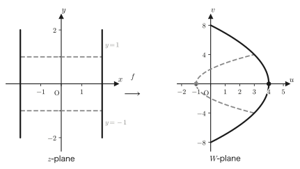

Chapter 22Complex Functions and Mappings
In the previous chapter, we reinterpreted a complex number $z=a+bi$ as a single point in the complex plane, and we acquired a basic set of tools: the absolute value, the polar form, de Moivre's theorem, and Euler's formula. Starting with this chapter, instead of treating complex numbers one by one as points, we treat “a rule that assigns a complex number to a complex number”—that is, a complex function $W=f(z)$. The real function $y=f(x)$ that you learned about in high school mathematics is a rule that assigns to a number $x$ a number $y$. A complex function rests on exactly the same idea: it is merely a rule that assigns to a complex number $z=x+iy$ another complex number $W=u+iv$. The difference is that not only $x$ but also $y$ varies, and not only $u$ but also $v$ varies—that is, the independent variable and the dependent variable are each made up of two real numbers (four real numbers in total). The graph of a real function could be drawn by plotting the pair $(x,y)$ of real numbers as a single point in the plane, but the “graph” of a complex function consists of quadruples $(x,y,u,v)$ of real numbers, and as it stands we cannot see it, because our eyes can picture at most three dimensions. So, instead of drawing the four-dimensional graph all at once, our predecessors devised the following method: draw side by side two planes—the plane representing $z=x+iy$ (the $z$-plane) and the plane representing $W=u+iv$ (the $W$-plane)—and follow where in the $W$-plane $f$ carries a point or figure of the $z$-plane. This is the viewpoint of “mapping” that appears in the title of this chapter.
From this viewpoint, studying a complex function becomes a problem in geometry: “which points (or curves, regions) of the $z$-plane are carried to which points (or curves, regions) of the $W$-plane?” In this chapter we start from simple examples such as $W=(1+i)z$, and our goal is to be able to distinguish, through concrete computations and figures, the “one-to-one correspondence,” in which one point is carried to exactly one point; the “many-to-one correspondence,” in which several points are squashed into one point; and the “two-to-one correspondence” ($W=z^2$), in which exactly two points are gathered into one point. Furthermore, we learn how to resolve the troublesome problem that the function $W=1/z$ cannot be defined at $z=0$, by adding one new point, the point at infinity, and considering the function on a sphere called the Riemann sphere. Finally, we introduce the complex polynomial function of degree $n$, which is expressed by a polynomial, and the linear fractional function (Möbius transformation), which has the form of a fraction. We will see that a linear fractional function is nothing more than a composition of the simple operations “rotation, scaling, translation, and inversion”—this fact is also the starting point of the idea of conformal mapping, which is used in engineering when dealing with electric fields and fluid flow. The viewpoint of “seeing a function as a mapping,” which you acquire in this chapter, remains a consistent foundation both when we extend the exponential, logarithmic, and trigonometric functions to the world of complex numbers in the next chapter and when we define holomorphic functions in Chapter 24.
- The definition of a complex function $W=f(z)$: understanding it as a mapping that carries a set $D_1$ in the $z$-plane to a set $D_2$ in the $W$-plane according to a rule
- Distinguishing among one-to-one (injective), many-to-one, and two-to-one complex functions, and deciding which type each is for the concrete examples $W=(1+i)z$, $W=\mathrm{Re}(z)$, $W=z\bar z=\abs{z}^2$, and $W=z^2$
- That $W=z^2$ is a two-to-one correspondence except at the origin, and the computation of what kinds of parabolas and circles in the $W$-plane the images of lines and circles in the $z$-plane turn out to be ($u=x^2-y^2$, $v=2xy$)
- The polar-form expression $R=1/r,\ \Theta=-\theta$ of $W=1/z$ (a composition of inverting the magnitude and reflecting across the real axis), and the introduction of the point at infinity, $z=\infty\leftrightarrow W=0$, $z=0\leftrightarrow W=\infty$
- The mechanism by which the Riemann sphere lets us treat the point at infinity as “an ordinary point, not a special one”
- The definitions of the complex polynomial function of degree $n$, $W=\sum_{k=0}^n\alpha_kz^k$, and of the linear fractional function (Möbius transformation) $W=\dfrac{\alpha z+\beta}{\gamma z+\delta}$ ($\alpha\delta-\beta\gamma\neq0$)
- That a linear fractional function can be decomposed into the form $W=C_1\dfrac{1}{\gamma z+\delta}+C_2$, and is a composition of five simple mappings: “rotation and scaling,” “translation,” “inversion,” “rotation and scaling,” and “translation”
Source notes: Yasuhide Mochizuki, Mathematics Notes: Complex Analysis, pp. 9–14.
22.1 What Is a Complex Function? — Understanding It as a Mapping
First, let us get a feel for the idea with concrete numbers. For example, consider the rule $W=(1+i)z$. If we substitute $z=1+i$, we get $W=(1+i)(1+i)=(1+i)^2=1+2i+i^2=2i$, so a single complex number $z$ determines a single complex number $W$ without any ambiguity. A rule that “assigns complex numbers to complex numbers” in this way is called a complex function. A precise definition is given below. Several symbols appear, but if you read them one at a time, comparing each with the definition of a function in high school mathematics, it is not difficult.
Definition 22.1: Complex function
Consider the set of complex numbers $D_1=\{z\mid z=x+iy,\ x,y\in\R\}$ (the symbol $\{z\mid \cdots\}$ is read as “the set of all $z$ satisfying $\cdots$”; this is the way of writing sets that you learned in High School Mathematics, Section 1.5). Suppose that, according to some rule $f$, exactly one point of another set of complex numbers $D_2=\{W\mid W=u(x,y)+iv(x,y),\ u,v\in\R\}$ is determined for each point $z$ of $D_1$. We write this correspondence as
\begin{equation} W=f(z) \label{eq:22-def} \end{equation}and call $f$ a complex function defined on the set $D_1$, or a mapping from $D_1$ to $D_2$.
The condition “exactly one is determined” simply carries over into the world of complex numbers the definition of a function that you learned in high school mathematics—“a rule such that fixing the value of the independent variable determines exactly one value of the dependent variable.” Here $z$ plays the role of the independent variable and $W$ that of the dependent variable. Moreover, $z=x+iy$ (with $x,y$ the independent variables) and $W=u+iv$ (with $u,v$ the dependent variables). In other words, specifying a complex function is in fact equivalent to specifying a pair of two real-valued functions:
$$ u=u(x,y),\qquad v=v(x,y) $$The function $u(x,y)$ is called “the real part of $W$,” and $v(x,y)$ is called “the imaginary part of $W$”; we also write $u=\mathrm{Re}(W)$ and $v=\mathrm{Im}(W)$.
Why?: $y=f(x)$ was a mapping all along
“Mapping” may sound like a new word, but it is in fact something you are already familiar with. The real function $y=f(x)$ that you have worked with in high school mathematics is also a rule that assigns to a point $x$ on the number line a point $y$ on the number line, so it is a perfectly legitimate example of a mapping. The only difference is that for a complex function the target is not a “point on a number line” but a “point in a plane.”
The independent variable of a complex function is $z=x+iy$ (two real numbers $x,y$) and the dependent variable is $W=u+iv$ (two real numbers $u,v$), so four real variables are involved in all. The graph of a real function $y=f(x)$ was obtained by drawing the pair $(x,y)$ of the two real numbers $x$ and $y$ as a single point in the plane. If we try to apply the same idea to a complex function, we need a “four-dimensional graph” in which the quadruple $(x,y,u,v)$ of four real numbers is drawn, but we, who can visualize only up to three dimensions, cannot draw such a thing. So we give up drawing all four real numbers at once and instead split them between the plane representing $z=x+iy$ (the $z$-plane) and the plane representing $W=u+iv$ (the $W$-plane)—that is, we consider two separate planes. Examining where in the $W$-plane a point or curve in the $z$-plane is carried by the complex function $f$ amounts to examining the graphical meaning of $W=f(z)$. This is the substance of the “mapping” point of view.
The first step in working with complex functions is the computation that extracts, from the given expression for $f(z)$, the real part $u(x,y)$ and the imaginary part $v(x,y)$ as explicit expressions in $x,y$. Let us practice it in the following example.
Example 22.1: Finding the real and imaginary parts of a complex function
For the complex function $W=f(z)=z^2-\bar z$: (1) Find the real part $u(x,y)$ and the imaginary part $v(x,y)$. (2) Find the image $f(2+i)$ of the point $z=2+i$.
Solution. (1) Let $z=x+iy$. Then $z^2=(x+iy)^2=x^2+2ixy+i^2y^2=x^2-y^2+2ixy$ (we used $i^2=-1$), and $\bar z=x-iy$ (the complex conjugate changes the sign of the imaginary part). Therefore
$$ W=z^2-\bar z=(x^2-y^2+2ixy)-(x-iy)=(x^2-y^2-x)+i(2xy+y) $$(we collected the real parts and the imaginary parts separately). Hence
$$ u(x,y)=x^2-y^2-x,\qquad v(x,y)=2xy+y=y(2x+1) $$(if we write $v$ in a form with $y$ factored out, the next computation is easier to follow).
(2) The point $z=2+i$ corresponds to $x=2,\ y=1$. Substituting into the result of (1), we obtain
$$ u(2,1)=2^2-1^2-2=4-1-2=1,\qquad v(2,1)=1\cdot(2\cdot2+1)=1\cdot5=5 $$Hence $f(2+i)=1+5i$. As a check, computing directly from the definition gives $z^2=(2+i)^2=4+4i+i^2=3+4i$, and since $\bar z=2-i$, we get $z^2-\bar z=(3+4i)-(2-i)=1+5i$, which agrees (verified with SymPy).
22.2 One-to-One and Many-to-One Mappings
Once a single complex function $W=f(z)$ is given, it is determined where each of the various points of the $z$-plane is mapped in the $W$-plane. Depending on how distinct points correspond, mappings can be classified into two kinds. Let us start with the most basic one, the “one-to-one correspondence.” For example, for the function $W=(1+i)z$ we saw earlier, substituting $z=1$ gives $W=1+i$, and substituting $z=i$ gives $W=i(1+i)=i-1$; putting in different values of $z$ always returns different values of $W$ (indeed, multiplying by a nonzero number never produces 0, so if $z_1\neq z_2$ then $(1+i)z_1\neq(1+i)z_2$). We define a complex function with this property, “distinct points are mapped to distinct points,” as follows.
Definition 22.2: One-to-one complex functions (injective)
For a complex function $W=f(z)$, if any two distinct points $z_1\neq z_2$ of the $z$-plane are always mapped to distinct points $f(z_1)\neq f(z_2)$ of the $W$-plane as well, we say that $f$ is a complex function with a one-to-one correspondence. Such a mapping is also called injective. In other words, a single point of the $W$-plane corresponds to exactly one point of the $z$-plane.
Let us check this with a concrete example. Consider the complex function $W=f(z)=(1+i)z$. Writing $1+i$ in polar form gives
$$ 1+i=\sqrt2\left(\frac{1}{\sqrt2}+i\frac{1}{\sqrt2}\right)=\sqrt2\,e^{i\frac\pi4} $$(We used the fact that $\cos\frac\pi4=\sin\frac\pi4=\frac1{\sqrt2}$ and the polar form $r(\cos\theta+i\sin\theta)=re^{i\theta}$ from the previous chapter.) Therefore, we have
\begin{equation} \frac{W}{z}=1+i=\sqrt2\,e^{i\frac\pi4} \label{eq:22-oneone-ratio} \end{equation}This equation $\dfrac{W}{z}=\sqrt2\,e^{i\frac\pi4}$ shows that the quantity corresponding to the “slope of the complex function” is the constant $\sqrt2\,e^{i\frac\pi4}$. As we learned in Section 21.3 of the previous chapter, multiplying by a complex number is the operation of “multiplying the magnitudes and adding the arguments,” so what this equation means is that whatever point $z=x+iy$ we map to $W$, the magnitude (absolute value) of $z$ is multiplied by $\sqrt2$ and the argument is increased by $\dfrac\pi4$ (a counterclockwise rotation).
Let us actually check this. Substituting $z=\dfrac{1}{\sqrt2}+i\dfrac{1}{\sqrt2}\left(=e^{i\frac\pi4}\right)$ (the point with absolute value 1 and argument $\frac\pi4$), we get
\begin{equation} W=f\left(\frac{1}{\sqrt2}+i\frac1{\sqrt2}\right)=(1+i)\left(\frac1{\sqrt2}+i\frac1{\sqrt2}\right)=\sqrt2\,e^{i\frac\pi4}\cdot e^{i\frac\pi4}=\sqrt2\,e^{i\frac\pi2}\ \left(=\sqrt2\,i\right) \label{eq:22-oneone-example} \end{equation}(We used the law of exponents $e^{iA}\cdot e^{iB}=e^{i(A+B)}$.) We see that the point with absolute value 1 and argument $\frac\pi4$ has been mapped to the point with absolute value $\sqrt2$ and argument $\frac\pi2$—the magnitude has been multiplied by $\sqrt2$ and the argument has increased by $\frac\pi4$, exactly as Eq. \eqref{eq:22-oneone-ratio} predicts.
For this complex function, whichever single point of the $z$-plane we take, it corresponds to exactly one point of the $W$-plane—if different points are substituted, both the magnitude and the argument are uniquely determined, so different values of $W$ are obtained. Hence this function is a one-to-one complex function. In general, for a linear function using a complex constant $a=re^{i\alpha}$ other than $0$ and a complex constant $b$, the following holds.
Formula 22.1: Geometric meaning of the linear function $W=az+b$
Let $a=re^{i\alpha}$ ($r=\abs a\gt0$) and $b$ be complex constants. The linear function $W=az+b$ is the mapping that takes a point of the $z$-plane, scales it by a factor of $r$ and rotates it through the angle $\alpha$ about the origin, and then translates it by $b$. In particular, when $b=0$, $W=az$ is a one-to-one mapping that does not move the origin.
Check of Formula 22.1
Letting $z=\abs z\,e^{i\theta}$, we get $az=r\abs z\,e^{i(\alpha+\theta)}$, whose absolute value is $r\abs z$ ($r$ times the original) and whose argument is $\alpha+\theta$ (increased by $\alpha$ from the original). Adding $b$ further is the operation of translating by $b$ in the complex plane (the geometric meaning of the sum of complex numbers learned in the previous chapter). Moreover, if $z_1\neq z_2$ then $az_1+b\neq az_2+b$ (if both sides were equal, we would have $a(z_1-z_2)=0$, but this contradicts $a\neq0$ and $z_1\neq z_2$), so $W=az+b$ itself is always a one-to-one correspondence, even when $b=0$ does not hold. ∎
Example 22.2: The mapping represented by $W=iz$
Find the mapping represented by the complex function $W=iz$ (its scale factor and rotation angle). Also find the image $W$ of $z=1+i$.
Solution. Since $i=e^{i\frac\pi2}$ (absolute value 1, argument $\frac\pi2$), this is the case $a=i=1\cdot e^{i\frac\pi2}$, $b=0$ of Formula 22.1. Hence $W=iz$ is the mapping that multiplies the magnitude by $1$ (leaves it unchanged) and increases the argument by $\dfrac\pi2$ (rotates by $90°$). When $z=1+i$, we have
$$ W=i(1+i)=i+i^2=i-1=-1+i $$As a check, since $z=1+i=\sqrt2\,e^{i\frac\pi4}$ (absolute value $\sqrt2$, argument $\frac\pi4$), rotating by $90°$ should give a point with absolute value $\sqrt2$ and argument $\frac\pi4+\frac\pi2=\frac{3\pi}4$. The number $-1+i$ has absolute value $\sqrt{(-1)^2+1^2}=\sqrt2$ and argument $\arctan\frac1{-1}$ (second quadrant) $=\frac{3\pi}4$, so the two agree (verified with SymPy).
Next, we look at a mapping that is not one-to-one. Let us consider the following example. Take the complex function $W=f(z)=\mathrm{Re}(z)$ (the function that extracts the real part of $z$). If $z=x+iy$ and $W=u+iv$, then $\mathrm{Re}(z)=x$, so we have
$$ \begin{cases} u(x,y)=x \\ v(x,y)=0 \end{cases} $$That is, the points $z=3+i,\ 3+2i,\ 3+\pi i,\ 3+1000i$ are all mapped to the same point $u=3$, even though their $y$-coordinates are completely different. Hence this function can map distinct points to the same point—it is a complex function that is not one-to-one.
Caution: Even a many-to-one correspondence is still a “function”
At this point you may worry: “If distinct points are mapped to the same point, aren't we violating the definition of a function (a rule under which, once a value of the independent variable is fixed, a single value of the dependent variable is determined)?” However, all that the definition of a function requires is that “for a single $z$, $W$ is determined uniquely,” and it does not say that “distinct $z$ must correspond to distinct $W$.” Even for $W=\mathrm{Re}(z)$, once a single $z$ is specified, $W=\mathrm{Re}(z)$ is determined uniquely (if $z=3+2i$, then $W$ is always $3$ and never takes any other value). Therefore a many-to-one correspondence does not violate the definition of a function itself; there is merely the special circumstance that “a curve collapses to a single point.” In fact, in high school mathematics we have already met many-to-one real functions—for example, $y=x^2$ is a many-to-one real function that gives the same $y=4$ for both $x=2$ and $x=-2$. However, there are also examples that truly do violate the definition of a function itself, “for a single $z$, $W$ is determined uniquely,” and they in fact appear later on—the complex logarithm $\log z$ and the complex powers (such as $z^{1/2}$) that we study in Chapter 23 are multivalued functions, for which a single $z$ corresponds to multiple (infinitely many, or finitely many) values of $W$, and these truly do violate the definition of a function (we study this in detail in Chapter 23, Section 23.3).
Let us look at one more example. Consider the complex function $W=g(z)=z\cdot\bar z=\abs{z}^2$. If $z=x+iy$, then $\abs{z}^2=x^2+y^2$, so we have
$$ \begin{cases} u(x,y)=x^2+y^2 \\ v(x,y)=0 \end{cases} $$That is, whichever point on the circle $\{z:\abs z=r\}$ of radius $r$ centered at the origin of the $z$-plane we map, it is mapped to the same point $u=r^2$. Hence this function is also a many-to-one complex function.
Definition 22.3: Many-to-one complex function
For a complex function $W=f(z)$, if there are two distinct points $z_1\neq z_2$ in the $z$-plane with $f(z_1)=f(z_2)$ (that is, the function is not one-to-one), then $f$ is called a many-to-one complex function.
Let us confirm the difference between one-to-one and many-to-one correspondences with one more example. Note that even a function that at first glance seems to crush one coordinate may in fact lose no information.
Example 22.3: Is $W=\mathrm{Re}(z)+2i\,\mathrm{Im}(z)$ one-to-one or many-to-one?
Determine whether the complex function $W=\mathrm{Re}(z)+2i\,\mathrm{Im}(z)$ is one-to-one or many-to-one.
Solution. Let $z=x+iy$. Since $\mathrm{Re}(z)=x$ and $\mathrm{Im}(z)=y$, we have
$$ u(x,y)=x,\qquad v(x,y)=2y $$At first glance this resembles $W=\mathrm{Re}(z)$ (which was many-to-one), but the difference is that this time the information about the imaginary part, $y$, also remains in $W$ in the form $v=2y$. Indeed, if we know the values of $(u,v)$, then
$$ x=u,\qquad y=\frac{v}{2} $$and the original $z=x+iy=u+i\frac{v}{2}$ can be recovered in exactly one way. Therefore, different $(x,y)$ always give different $(u,v)$ (if $x$ differs, then $u$ differs; and if $x$ is the same but $y$ differs, then $v=2y$ differs). Hence this function is one-to-one. Note the difference: $W=\mathrm{Re}(z)$ completely discarded the information about $y$ and so became many-to-one, whereas in the present problem the information about $y$ is preserved in $v$ (though altered by a factor of $2$), and so the function is one-to-one.
22.3 A Two-to-One Mapping: $W=z^2$
In fact, there are finer gradations between one-to-one and many-to-one correspondences. Let us examine the complex function $W=f(z)=z^2$ in detail and observe a special many-to-one correspondence in which “exactly two points gather into one point”—a two-to-one correspondence. Let $z=x+iy$ and $W=u+iv$.
$$ W=z^2\quad\text{that is}\quad u+iv=(x+iy)^2 $$Expanding the right-hand side (note that $i^2=-1$), we have $(x+iy)^2=x^2+2ixy+i^2y^2=(x^2-y^2)+2ixy$, which gives the following formula.
Formula 22.2: The real and imaginary parts of $W=z^2$
\begin{equation} \begin{cases} u(x,y)=x^2-y^2 \\ v(x,y)=2xy \end{cases} \label{eq:22-z2-uv} \end{equation}Using Eq. \eqref{eq:22-z2-uv}, let us compute the images of some special lines and circles.
[i] The case $y=0$ (the real axis). Substituting $y=0$ into Eq. \eqref{eq:22-z2-uv} gives $u(x,0)=x^2$ and $v(x,0)=0$. In particular, when $x=\pm a$ ($a$ is a positive real number), both are mapped to the same point $u=a^2$. Thus we see at once that $W=z^2$ is two-to-one even on the real axis (this is exactly the same phenomenon as in the graph of the real function $y=x^2$, which sends $x=\pm a$ to the same value $y=a^2$).
[ii] The case $y=\pm1$. Substituting into Eq. \eqref{eq:22-z2-uv} (double signs in the same order; that is, read the upper signs together and the lower signs together), we obtain
$$ u(x,\pm1)=x^2-1,\qquad v(x,\pm1)=\pm2x $$Let us eliminate $x$ from these two equations to obtain a relation between $u$ and $v$ alone (the equation of the image). From the second equation, $x=\pm\dfrac{v}{2}$; that is, when $y=1$, $v=2x$ gives $x=\dfrac v2$, and when $y=-1$, $v=-2x$ gives $x=-\dfrac v2$ ($x=\dfrac v2$ and $x=-\dfrac v2$ have opposite signs and are, in general, different values). However, when we substitute this into the first equation $u=x^2-1$, in both cases $x$ is squared, so that $\left(\dfrac v2\right)^2=\left(-\dfrac v2\right)^2=\dfrac{v^2}4$, and we get the same result for both $y=\pm1$. Therefore, substituting with the double signs in the same order, we obtain
$$ u=\left(\frac v2\right)^2-1=\frac{v^2}4-1 $$In the $W$-plane this is $v^2=4(u+1)$; that is, a parabola with vertex $(u,v)=(-1,0)$ opening in the direction of the $u$-axis (this is the same form as $y^2=4px$, which you learned in High School Mathematics, Section 8.1).
[iii] The case $x=\pm2$. Similarly, substituting into Eq. \eqref{eq:22-z2-uv} (double signs in the same order), we obtain
$$ u(\pm2,y)=4-y^2,\qquad v(\pm2,y)=\pm4y $$From the second equation, $y=v/4$, and substituting this into the first equation gives
$$ u=4-\left(\frac v4\right)^2=4-\frac{v^2}{16} $$This is also a parabola, but its vertex is $(u,v)=(4,0)$, and, in contrast to [ii], it opens in the negative direction of $u$.
[iv] The case of the upper half of the unit circle, $x=\cos t,\ y=\sin t\ (0\le t\le\pi)$. Substituting into Eq. \eqref{eq:22-z2-uv}, we obtain
$$ \begin{cases} u(x,y)=x^2-y^2=\cos^2t-\sin^2t=\cos2t\\ v(x,y)=2xy=2\cos t\sin t=\sin2t \end{cases} $$(We used the double-angle formulas $\cos2t=\cos^2t-\sin^2t$ and $\sin2t=2\sin t\cos t$—formulas you learned in high school mathematics are used here directly in computing the real and imaginary parts of a complex function.) Thus the semicircle of radius 1 in the $z$-plane ($0\le t\le\pi$) becomes, in the $W$-plane, $(u,v)=(\cos2t,\sin2t)$; that is, the entire circle of radius 1 (as $t$ moves from $0$ to $\pi$, $2t$ moves from $0$ to $2\pi$, going around the unit circle exactly once). The semicircle, a “half” figure, is thus “stretched” into a whole circle.

As we can see from [i]–[iv], $W=z^2$ is two-to-one at every point except the origin ($z=0$ alone is a special point that is mapped to just the one point $W=0$), the image of a line is a parabola, and the image of (half of) a circle is a circle. This phenomenon that “taking the $n$th power gives an $n$-to-one correspondence” is a general fact that also holds for the general $n$th power mapping.
Theorem 22.1: $W=z^n$ ($n\ge2$) is $n$-to-one
Let $n$ be an integer greater than or equal to $2$. The complex function $W=z^n$ is $n$-to-one at every point except the origin $z=0$. That is, for any $W_0$ other than $0$, there are exactly $n$ values of $z$ satisfying $z^n=W_0$.
Proof (using the polar form)
Let $z=re^{i\theta}$ ($r=\abs z>0$). Then, by de Moivre's theorem (the previous chapter), we have
$$ W=z^n=r^ne^{in\theta} $$Now let $W_0=R_0e^{i\Theta_0}$ ($R_0=\abs{W_0}\gt0$). Then $z^n=W_0$ is equivalent to $r^n=R_0$ and $n\theta=\Theta_0+2k\pi$ ($k$ is an integer; note that $e^{i\theta}$ takes the same value every $2\pi$). Hence we obtain
$$ r=\sqrt[n]{R_0}\ (\text{the positive real root, only one choice}),\qquad \theta=\frac{\Theta_0}n+\frac{2\pi k}n\quad(k=0,1,\dots,n-1) $$If we let $k$ run through the $n$ values $0,1,\dots,n-1$, then $\theta$ takes $n$ distinct values shifted by $\dfrac{2\pi}n$ each (if we take $k=n$, then $\theta$ is merely $2\pi$ larger than for $k=0$ and represents the same point, so exactly $n$ distinct values of $z$ are obtained), and any other integer $k$ just repeats the same $n$ values. Therefore there are exactly $n$ values of $z=re^{i\theta}$ satisfying $z^n=W_0$. ∎
Setting $n=2$ in this theorem, we see that the two-to-one correspondence of $W=z^2$ observed in [i]–[iv] is a special case of it. In the next examples, let us practice finding the image of a line and also confirm the case $n=3$.
Example 22.4: The image of the line $x=1$ under $W=z^2$
Find the image in the $W$-plane of the line $x=1$ ($y$ is an arbitrary real number) in the $z$-plane under $W=z^2$.
Solution. Substituting $x=1$ into Eq. \eqref{eq:22-z2-uv}, we obtain
$$ u(1,y)=1-y^2,\qquad v(1,y)=2y $$From the second equation, $y=\dfrac v2$, and substituting this into the first equation, we obtain
$$ u=1-\left(\frac v2\right)^2=1-\frac{v^2}4 $$This is a parabola with vertex $(u,v)=(1,0)$ opening in the negative direction of $u$ (note that the sign is the opposite of that in $u=\frac{v^2}4-1$ of Section 22.3 [ii], and the direction of opening is also opposite—in [ii] the parabola opens in the positive direction of $u$, while in the present problem it opens in the negative direction). Note also that on the line $x=1$, $v=2y$ takes a different value for each value of $y$, so the correspondence from this line to the parabola is one-to-one (although $W=z^2$ itself is two-to-one, it becomes one-to-one if we restrict it to this line only).
Example 22.5: The image of the unit circle under $W=z^3$ (confirming the three-to-one correspondence)
Find the image of the circle $\abs z=1$ of radius 1 centered at the origin under $W=z^3$, and determine how many points are mapped to a single point by this mapping.
Solution. Let $z=e^{i\theta}$ ($0\le\theta\lt2\pi$). Then $W=z^3=e^{3i\theta}$. As $\theta$ moves from $0$ up to (but not including) $2\pi$, $3\theta$ moves from $0$ up to (but not including) $6\pi$. Since $e^{i\phi}$ returns to the same point each time $\phi$ increases by $2\pi$, the movement of $3\theta$ from $0$ to $6\pi$ corresponds to going three times around the unit circle. Hence the image is the circle of radius 1 centered at the origin (the same as the original circle).
That this mapping is three-to-one can be seen from Theorem 22.1 ($n=3$), and it can also be checked directly. For example, taking $\theta_0=\dfrac\pi9$, the three distinct angles
$$ \theta_0,\quad\theta_0+\frac{2\pi}3,\quad\theta_0+\frac{4\pi}3 $$all satisfy $3\theta=\dfrac\pi3+2\pi k$ ($k=0,1,2$) and give the same value $e^{3i\theta}=e^{i\pi/3}$ (verified numerically with SymPy: all three coincide with $W=\cos60°+i\sin60°$). In this way, for each point on the unit circle, the points with $3$ distinct values of $\theta$ (separated by $\frac{2\pi}3$) are mapped to the same $W$, so the mapping is exactly three-to-one.
22.4 $W=1/z$ and the Riemann Sphere
Next, we consider the complex function $W=f(z)=\dfrac1z$. This function has a problem that did not arise in any of our previous examples: it cannot be defined at $z=0$ (that would mean dividing by $0$). How to resolve this problem is the theme of this section.
First, let us examine what kind of mapping $W=1/z$ is, using the polar form. We express $z=x+iy$ and $w=u+iv$ in polar form, writing $z=re^{i\theta}$ and $w=Re^{i\Theta}$ (where $r=\abs z$, $\theta=\arg z$, $R=\abs w$, and $\Theta=\arg w$). Then
$$ w=\frac1z\quad\text{that is}\quad Re^{i\Theta}=\frac1{re^{i\theta}}=\frac1r\cdot e^{-i\theta} $$(As we learned in the previous chapter, dividing complex numbers gives the quotient of the absolute values and the difference of the arguments. The equation $\dfrac{1}{re^{i\theta}}=\dfrac{1}{r}e^{-i\theta}$ is the result of dividing the complex number $1$, which has absolute value $1$ and argument $0$, by the complex number with absolute value $r$ and argument $\theta$.) Comparing the absolute values and arguments of both sides, we see that the two relations
\begin{equation} R=\frac1r,\qquad \Theta=-\theta \label{eq:22-inv-polar} \end{equation}hold.
Formula 22.3: Representation of $W=1/z$ in polar form
For $z=re^{i\theta}$ ($r=\abs z\gt0$), the absolute value and argument of $w=1/z$ are $R=1/r$ and $\Theta=-\theta$. That is, $W=1/z$ is the mapping that “inverts the radius about the origin, $r\to1/r$, and then reflects the result across the real axis ($x$-axis).”
Now notice that the formula $W=1/z$ resembles the real function $y=1/x$. For the real function $y=1/x$, we have $x\neq0$ and $y\neq0$: $x=0$ is not in the domain, and $y=0$ never appears as a value either. For the complex function $w=1/z$, however, the situation is slightly different. We conveniently go ahead and define the value at $z=0$ as follows.
Definition 22.4: Point at infinity
For the complex function $w=1/z$, we set
$$ z=\infty\ \xrightarrow{\ 1/z\ }\ w=0,\qquad z=0\ \xrightarrow{\ 1/z\ }\ w=\infty $$That is, we denote the value at $z=0$ by a new symbol (point) “$\infty$,” and at the same time we agree that the value obtained by substituting “$z=\infty$” is $0$. This newly added point is called the point at infinity.
Why?: Why can the point at infinity be defined?—The Riemann sphere
“Treating $\infty$ as a single point” may seem strange at first. Why is that allowed? What explains it clearly is the Riemann sphere. We can express the idea of the mapping $w=1/z$, in a slightly different form, as a correspondence on a sphere.
Definition 22.5: Riemann sphere
Place a sphere on the $z$-plane (the complex plane) so that the lowest point $S$ of the sphere touches the origin of the plane. Let $N$ be the highest point of the sphere (the point directly above $S$, the antipode of $S$). For each point $w'$ on the sphere (other than $N$), draw the line through $N$ and $w'$, and let $z'$ be the point where it meets the $z$-plane. Through this correspondence $w'\leftrightarrow z'$, the points on the sphere can be put into one-to-one correspondence with the points of the $z$-plane. As the figure shows, the point on the sphere corresponding to $z'=0$ (the origin) is $w'=S$, and the point on the sphere corresponding to $z'=\infty$ (the point at infinity) is $w'=N$. In this way, if we use the whole sphere, both $z=0$ and $z=\infty$ become ordinary single points that can be treated just like any other point.
As $z'$ moves away from the origin $S$, the line $Nz'$ flattens out (while still passing through $N$, it becomes closer to horizontal), and the intersection point $w'$ moves along the sphere toward $N$. Conversely, when $z'$ approaches the origin, $w'$ approaches $S$. In other words, the “endless” operation of going arbitrarily far out in the $z$-plane can be expressed on the sphere as a perfectly ordinary limit, “approaching the single fixed point $N$.” This is the reason it is legitimate to treat the point at infinity as a single point. As for which circle in the $z$-plane the equator (the great circle at exactly the height midway between $S$ and $N$) corresponds to, we will consider this in Exercise 22.6 using similar triangles.
Example 22.6: The image of a circle through the origin under $W=1/z$
Find the image under $W=1/z$ of the circle $\abs{z-1}=1$ (the circle with center $1$ and radius $1$, which passes through the origin $z=0$).
Solution. Let $z=x+iy$. The equation of the circle, $\abs{z-1}=1$, is $(x-1)^2+y^2=1$; expanding it, we obtain
$$ x^2-2x+y^2=0\quad\text{that is}\quad x^2+y^2=2x $$(Let us check that this circle passes through $z=0$ ($x=y=0$): substituting gives $0=0$, which holds.) On the other hand, since $\dfrac1z=\dfrac{\bar z}{z\bar z}=\dfrac{\bar z}{\abs{z}^2}=\dfrac{x-iy}{x^2+y^2}$ (making the denominator real, an operation we learned in the previous chapter), the real and imaginary parts of $w=u+iv=1/z$ are
$$ u=\frac{x}{x^2+y^2},\qquad v=\frac{-y}{x^2+y^2} $$At points on the circle ($z\neq0$) we have $x^2+y^2=2x$, so substituting this into the expression for $u$ gives
$$ u=\frac{x}{2x}=\frac12\qquad(x\neq0\ \text{in which case this always holds}) $$Since $u$ is always $\dfrac12$ whatever values $x$ and $v$ take, the image is the vertical line $u=\dfrac12$ ($\mathrm{Re}(w)=\dfrac12$) in the $W$-plane. Note that the point $z=0$, through which the circle passes, corresponds to $w=\infty$ by Definition 22.4—the line together with the “point at infinity” is exactly the image of the whole circle (also verified numerically at several points: at every point on the circle, we get $u=0.5$ exactly). Thus a circle through the origin is mapped by $1/z$ to a line—this is the first example of the “circle-to-circle correspondence” (a correspondence in which circles and lines are mapped to circles and lines), which we will take up in Section 22.5 as part of the general theory of Möbius transformations.
22.5 Complex Polynomial Functions of Degree $n$ and Linear Fractional Functions
Let us take the functions $W=(1+i)z$, $W=z^2$, and $W=1/z$ that we have treated so far and look at them again in a somewhat broader framework.
Definition 22.6: Complex polynomial function of degree $n$
For a complex variable $z$, a function expressed as
\begin{equation} W=\sum_{k=0}^{n}\alpha_kz^k=\alpha_nz^n+\alpha_{n-1}z^{n-1}+\cdots+\alpha_1z+\alpha_0 \label{eq:22-poly} \end{equation}(where $\alpha_0,\alpha_1,\dots,\alpha_n$ are complex constants and the leading coefficient is $\alpha_n\neq0$) is called a complex polynomial function of degree $n$ (a polynomial of degree $n$ in the complex variable).
If $n=1$, then $W=\alpha_1z+\alpha_0$ (the linear function studied in Section 22.2), and if $n=2$, then $W=\alpha_2z^2+\alpha_1z+\alpha_0$ (which includes $W=z^2$ of Section 22.3); thus we see that the examples so far were special cases of complex polynomial functions of degree $n$. Using the idea of Theorem 22.1, it is expected that a complex polynomial function of degree $n$ also (if there are no terms other than the term of degree $1$) gives a correspondence that is roughly $n$-to-one, except near the origin; but the detailed correspondence of a general complex polynomial function of degree $n$ is not as simple as in the case of the $z^n$ term alone (because the terms get mixed together). We will treat this point rigorously, as the fundamental theorem of algebra, from Chapter 26 (Cauchy's Integral Formula) onward.
Next, let us consider complex functions in the form of a fraction. For example, consider a complex function in fractional form such as $W=\dfrac{2z+1}{z-1}$, in which the numerator and the denominator are both linear expressions in $z$ (we will decompose such a concrete example in detail in Example 22.7). In general, we define the following.
Definition 22.7: Linear fractional function (Möbius transformation)
For a complex variable $z$, a function expressed as
\begin{equation} W=\frac{\alpha z+\beta}{\gamma z+\delta}\qquad(\alpha,\beta,\gamma,\delta:\text{complex constants},\ \alpha\delta-\beta\gamma\neq0) \label{eq:22-mobius} \end{equation}is called a linear fractional function or a Möbius transformation (named after the 19th-century German mathematician Möbius).
Caution: Why is the condition $\alpha\delta-\beta\gamma\neq0$ needed?
Suppose $\alpha\delta-\beta\gamma=0$ (and $\gamma\neq0$). Then $\alpha\delta=\beta\gamma$ gives $\dfrac\alpha\gamma=\dfrac\beta\delta$ ($=k$, say), so we can write $\alpha=k\gamma$ and $\beta=k\delta$. In this case
$$ W=\frac{k\gamma z+k\delta}{\gamma z+\delta}=\frac{k(\gamma z+\delta)}{\gamma z+\delta}=k $$which shows that $W$ turns out to be a constant that does not depend on $z$—this is not a meaningful correspondence as a mapping. The condition $\alpha\delta-\beta\gamma\neq0$ is there to exclude this degenerate case.
Things become clearer if we divide the denominator of a linear fractional function by its numerator (more precisely, the numerator by the denominator). Assuming $\gamma\neq0$, divide $\alpha z+\beta$ by $\gamma z+\delta$ (in the same way as polynomial division in high school mathematics). The quotient is $\dfrac\alpha\gamma$ and the remainder is $\beta-\dfrac{\alpha\delta}\gamma$.
Math Note: Checking by polynomial division
Long division of $\alpha z+\beta$ by $\gamma z+\delta$ is set out as follows.
| Quotient | $\dfrac\alpha\gamma$ |
| $\gamma z+\delta\big)$ | $\alpha z+\beta$ |
| $\underline{\alpha z+\dfrac{\alpha\delta}\gamma}$ | |
| Remainder | $\beta-\dfrac{\alpha\delta}\gamma$ |
(Multiplying $\gamma z+\delta$ by the quotient $\dfrac\alpha\gamma$ gives $\alpha z+\dfrac{\alpha\delta}\gamma$, and subtracting this from $\alpha z+\beta$ leaves the remainder $\beta-\dfrac{\alpha\delta}\gamma$.)
Therefore,
$$ W=\frac{\alpha z+\beta}{\gamma z+\delta}=\frac\alpha\gamma+\frac{\beta-\dfrac{\alpha\delta}\gamma}{\gamma z+\delta}=\underbrace{\frac{\beta\gamma-\alpha\delta}\gamma}_{\textstyle C_1}\cdot\frac1{\gamma z+\delta}+\underbrace{\frac\alpha\gamma}_{\textstyle C_2} $$(We put the numerator $\beta-\frac{\alpha\delta}\gamma$ over a common denominator to get $\frac{\beta\gamma-\alpha\delta}\gamma$, and factored it out as a constant in front of $\frac1{\gamma z+\delta}$.) That is, we obtain the following decomposition formula.
Formula 22.4: Decomposition of a linear fractional function
When $\gamma\neq0$, the linear fractional function $W=\dfrac{\alpha z+\beta}{\gamma z+\delta}$ can be written
\begin{equation} W=C_1\cdot\frac1{\gamma z+\delta}+C_2,\qquad C_1=\frac{\beta\gamma-\alpha\delta}\gamma,\quad C_2=\frac\alpha\gamma \label{eq:22-mobius-decomp} \end{equation}in this form.
Rewriting in this form, we see that a linear fractional function is built as a composition of the following five simple mappings:
$$ z\ \xrightarrow{\times\gamma}\ \gamma z\ \xrightarrow{+\delta}\ \gamma z+\delta\ \xrightarrow{\text{inversion}}\ \frac1{\gamma z+\delta}\ \xrightarrow{\times C_1}\ C_1\cdot\frac1{\gamma z+\delta}\ \xrightarrow{+C_2}\ W $$By Formula 22.1 (the meaning of a linear function), “$\times\gamma$” and “$\times C_1$” are each a rotation and scaling, and “$+\delta$” and “$+C_2$” are translations. The “inversion” in the middle is exactly $W=1/z$, studied in Section 22.4—that is, an inversion of the magnitude together with a reflection across the real axis. To summarize,
Preview: Linear fractional functions and the “circle-to-circle correspondence”
In Example 22.6 we saw that the circle $\abs{z-1}=1$ passing through the origin is mapped to a line by $W=1/z$. In fact, linear fractional functions, including $W=1/z$, have in general the property that they map “a circle or a line” to “a circle or a line” (a line may be regarded as a “circle of infinite radius,” or as a circle passing through the point at infinity). This property is called the circle-to-circle correspondence, and it is one of the reasons why linear fractional functions are so valuable in engineering. For example, a method of solving problems about electric fields or fluid flow in regions of complicated shape by using a linear fractional function (or, more generally, a conformal mapping) to replace them with problems in regions of simple shape (regions bounded by circles or lines) is used in materials engineering, electromagnetism, and fluid dynamics. We leave the proof of this general theory to full-fledged textbooks on complex analysis, but in Example 22.6 and Exercises 22.3 and 22.4 we have in effect already computed several of its first concrete examples.
Example 22.7: Decomposing a linear fractional function
Decompose the linear fractional function $W=\dfrac{2z+1}{z-1}$ into the form $C_1\dfrac1{\gamma z+\delta}+C_2$.
Solution. This expression is the case $\alpha=2,\ \beta=1,\ \gamma=1,\ \delta=-1$ (since $\alpha\delta-\beta\gamma=2\cdot(-1)-1\cdot1=-3\neq0$, it is indeed a linear fractional function). Substituting into Formula 22.4, we obtain
$$ C_1=\frac{\beta\gamma-\alpha\delta}\gamma=\frac{1\cdot1-2\cdot(-1)}1=\frac{1+2}1=3,\qquad C_2=\frac\alpha\gamma=\frac21=2 $$Hence the decomposition is
$$ W=\frac{2z+1}{z-1}=3\cdot\frac1{z-1}+2 $$As a check, putting the right-hand side over a common denominator gives $\dfrac{3+2(z-1)}{z-1}=\dfrac{2z+1}{z-1}$, which agrees with the original expression (partial fraction decomposition with SymPy's apart also gives $2+\dfrac3{z-1}$, confirming the result).
22.6 Summary and Exercises
22.6.1 Summary
- A complex function $W=f(z)$ (Definition 22.1) is a mapping that assigns to each point in the $z$-plane a point in the $W$-plane. If we write $z=x+iy$ and $W=u(x,y)+iv(x,y)$, then specifying a complex function is equivalent to specifying two real-valued functions $u,v$.
- A one-to-one mapping (injective, Definition 22.2) is a mapping in which distinct points go to distinct points; a many-to-one mapping (Definition 22.3) is a mapping in which distinct points may go to the same point. Even a “many-to-one mapping” does not violate the definition of a function (for each $z$ there is exactly one $W$). (Examples: $W=(1+i)z$ is one-to-one; $W=\mathrm{Re}(z)$ and $W=\abs{z}^2$ are many-to-one; and $W=\mathrm{Re}(z)+2i\mathrm{Im}(z)$ of Example 22.3, although it looks similar at first glance, is one-to-one.)
- $W=z^2$ is a two-to-one mapping except at the origin. In general, $W=z^n$ ($n\ge2$) is an $n$-to-one mapping except at the origin and the point at infinity (Theorem 22.1, which we proved using the polar form $z=re^{i\theta}$). The images of the lines $x=$ constant and $y=$ constant are parabolas.
- In polar form, $W=1/z$ is given by $R=1/r,\ \Theta=-\theta$ (the composition of an inversion and a reflection across the real axis, Formula 22.3). It assigns $W=\infty$ to $z=0$ and $W=0$ to $z=\infty$ (the point at infinity, Definition 22.4). If we use the Riemann sphere (Definition 22.5), the point at infinity can also be treated as an ordinary point, the north pole $N$.
- A circle through the origin is mapped to a line by $1/z$ (Example 22.6)—this is the first example of the “circle-to-circle correspondence” that holds for linear fractional functions in general.
- We defined the complex polynomial function of degree $n$ (Definition 22.6), $W=\sum_{k=0}^n\alpha_kz^k$, and the linear fractional function (Möbius transformation, Definition 22.7), $W=\dfrac{\alpha z+\beta}{\gamma z+\delta}$ (where $\alpha\delta-\beta\gamma\neq0$). The latter can be decomposed as $W=C_1\dfrac1{\gamma z+\delta}+C_2$ (Formula 22.4), and we saw that it is a composition of five stages: “rotation and scaling,” “translation,” “inversion,” “rotation and scaling,” and “translation.”
22.6.2 Exercises
Exercise 22.1: Is $W=\bar z$ (the conjugation mapping) one-to-one or many-to-one?
Determine whether the complex function $W=\bar z$ (the function that takes the complex conjugate of $z$) is a one-to-one or a many-to-one mapping. Also state its geometric meaning (what kind of operation it is in the $z$-plane).
Hint: Set $z=x+iy$ and find $u(x,y),v(x,y)$; then examine whether $(x,y)$ can be recovered uniquely from $(u,v)$ (the same procedure as in Example 22.3). You should be able to use the phrase “reflection across the real axis” that you learned in Section 22.4.
Exercise 22.2: The image of the imaginary axis under $W=z^2+1$
Find the image of the imaginary axis in the $z$-plane ($x=0$, $y$ any real number) under the complex function $W=z^2+1$.
Hint: Substitute $x=0$ into Eq. \eqref{eq:22-z2-uv} and compute $u(0,y),v(0,y)$. Note that $v$ is always $0$, and examine what range $u$ covers depending on the value of $y$.
Exercise 22.3: The image of the circle $\abs z=2$ under $W=1/\bar z$
Find the image of the circle $\abs z=2$ with center at the origin and radius 2 under the complex function $W=1/\bar z$.
Hint: Set $z=2e^{i\theta}$, compute $\bar z=2e^{-i\theta}$, and find the absolute value and the argument of $w=1/\bar z$. Compare with Formula 22.3 in Section 22.4 (the polar form of $W=1/z$) and check how the sign changes.
Exercise 22.4: Where the linear fractional function $W=\dfrac{z-1}{z+1}$ sends the special points
Find where the linear fractional function $W=\dfrac{z-1}{z+1}$ sends each of $z=1,\ z=-1,\ z=\infty$.
Hint: For $z=1,-1$ you can simply substitute into the expression (note that the denominator becomes $0$ at $z=-1$—use the point at infinity of Definition 22.4). The value at $z=\infty$ is found as the limit as $z$ becomes sufficiently large (or by dividing the numerator and the denominator by $z$ and considering $z\to\infty$).
Exercise 22.5: The image of the unit circle under $W=z^n$ winds around the unit circle $n$ times
Let $n$ be an integer greater than or equal to $2$. Explain that the image of the circle $\abs z=1$ (center at the origin, radius 1) under $W=z^n$ winds around the unit circle $n$ times.
Hint: Apply the same idea as in Example 22.5 (the case $n=3$) to general $n$. Setting $z=e^{i\theta}$ ($0\le\theta\lt2\pi$), examine the range over which the argument $n\theta$ of $W=e^{in\theta}$ varies.
Exercise 22.6: Which circle corresponds to the equator of the Riemann sphere?
On the Riemann sphere (Definition 22.5; take the sphere to have radius $R$), consider what circle in the $z$-plane corresponds to the horizontal great circle through the center of the sphere (the equator, the circle at the height exactly midway between $S$ and $N$).
Hint: Consider a cross section of the sphere. Taking $S$ as the origin, let $\rho$ be the radius of the sphere at height $h$ ($0\le h\le2R$); then the equation of the sphere is $\rho^2+(h-R)^2=R^2$ (a circle with center $(0,R)$ and radius $R$). Using similar triangles, find at what distance $r$ from the origin the line drawn from $N=(0,2R)$ through the point at height $h$ and radius $\rho$ reaches the $z$-plane (height $0$), and compute the case $h=R$ (the equator).
22.6.3 References
- Yasuhide Mochizuki, Mathematics Notes: Complex Analysis (handwritten lecture notes, in Japanese). The source of this chapter.
- Lars V. Ahlfors, Fukuso Kaiseki [Complex Analysis], translated by Kenkichi Kasahara, Gendai Sūgakusha, 1982 (Japanese translation of Complex Analysis; in Japanese).
- Reiji Takahashi, Fukuso Kaiseki [Complex Analysis], University of Tokyo Press, 1990 (in Japanese).
- Michio Jimbo, Fukuso Kansū Nyūmon [Introduction to the Theory of Complex Functions], Iwanami Shoten, 2003 (in Japanese).